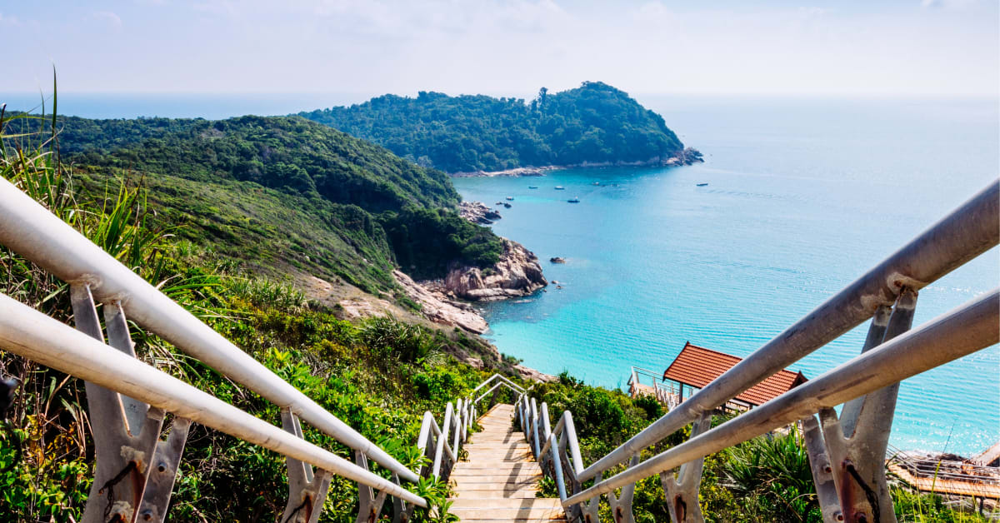
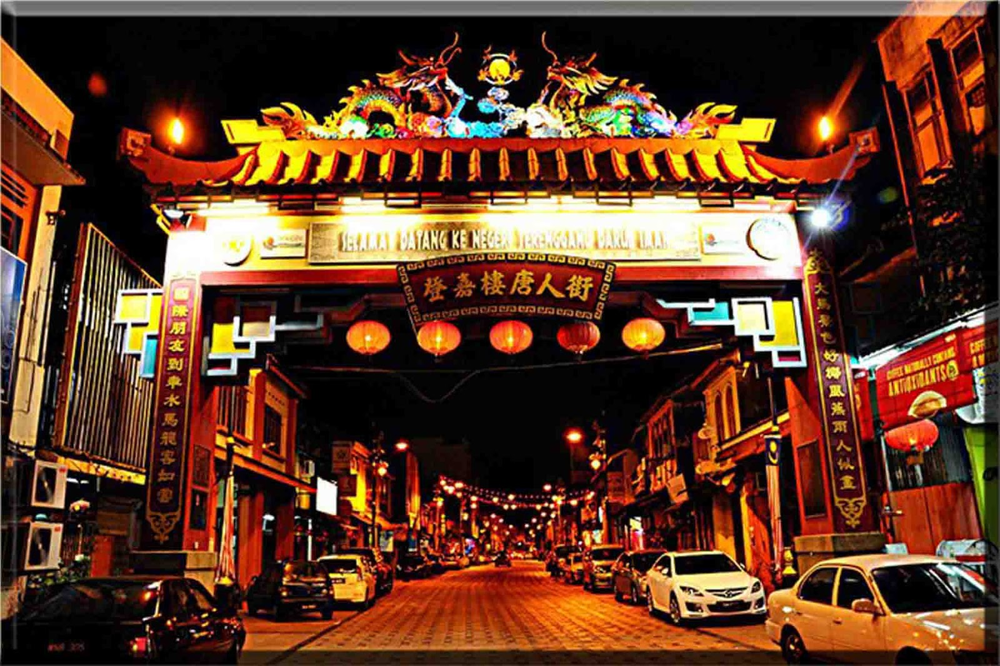
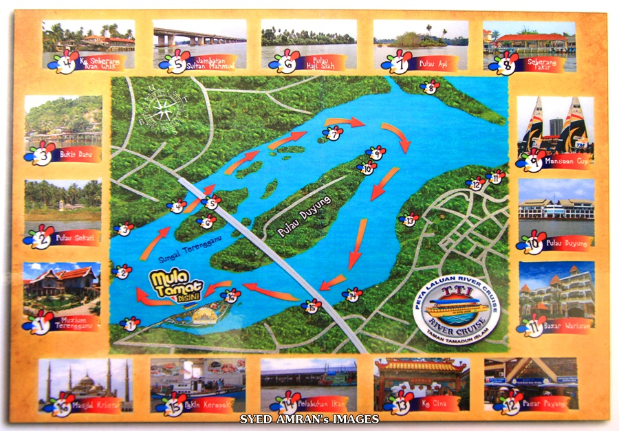
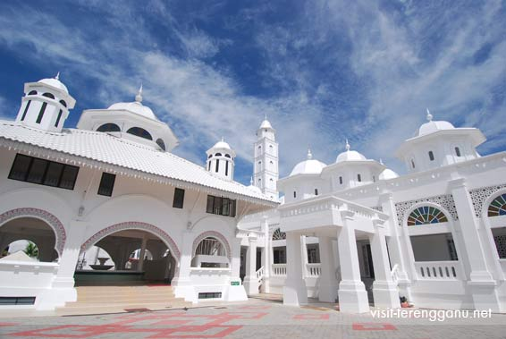
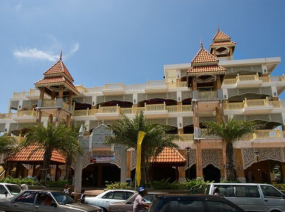

Terengganu sits between Kelantan and Pahang in northeast Malaysia. The state gets hardly any visitors, as most head to the tropical islands spread across the South China Sea. If you want empty beaches and perfect snorkelling conditions, head to Perhentian Islands. This diving oasis consists of two main islands: budget-friendly Perhentian Kecil (small) and upscale Perhentian Besar (big). Backpackers and younger travellers tend to head for Kecil, while families stay on Besar. What sets the Perhentian Islands apart from the rest of Malaysia’s beaches is its affordable diving schools. For a more luxurious getaway, spend a few nights in Redang Island’s exclusive resorts, while Kapas Island gives a welcome opportunity to get off the grid.

Perhentian Islands (Pulau Perhentian)
The Perhentian Islands are islands in Besut District, Terengganu, Malaysia. The two main islands are Perhentian Besar and Perhentian Kecil. The small, uninhabited islands of Susu Dara, Serengeh and Rawa lie off Kecil.

China Town, Kuala Terengganu
Kampung Cina, is a Chinatown located in Kuala Terengganu, Terengganu, Malaysia. Kampung Cina is located along Jalan Bandar, in Kuala Terengganu city centre at the river mouth of Terengganu River that empties into the South China Sea.
Address: Jalan Kampung Cina, 20100 Kuala Terengganu, Terengganu

TTI River Cruise
Its a river cruise which goes around Pulau Duyung Address: Pulau Wan Man Kampung Losong Panglima P'erang, 21000 Kuala Terengganu, Terengganu

Masjid Abidin AKA Masjid Putih
The Abidin Mosque is Terengganu's old state royal mosque built by Sultan Zainal Abidin II between 1793 and 1808. The mosque, which is also known as the White Mosque or the Big Mosque, is located in Kuala Terengganu, Terengganu, Malaysia. The old Royal Mausoleum is situated near the mosque.
Address: Jalan Masjid Abidin, 20000 Kuala Terengganu, Terengganu

Bazaar Warisan
Bazaar Warisan is an alternative for tourists who want to shop in Terengganu apart from Pasar Payang. Address: 19, Jalan Sultan Zainal Abidin, Kampung Panglima, 20200 Kuala Terengganu, Terengganu